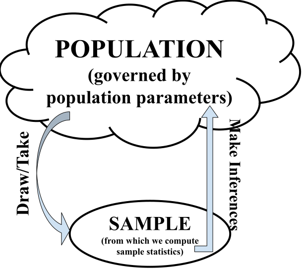

PSTAT 5A: Lecture 11
Introduction to Inferential Statistics
Leadup
- Let’s, for the moment, don our Sociology hats and say we’re interested in estimating the average monthly income of US Citizens.
- Surveying every single US Citizen and recording their income is not feasible- doing so would be far too expensive (both in terms of monetary cost as well as temporal cost)
- Instead, a natural idea is to take a sample of some subset of US Citizens, and record the average monthly income of these sampled individuals.
- Now, here’s a question: given two separate samples of, say, 125 US Citizens- do we expect the average income of these two samples to be exactly the same, or slightly different?
- Probably slightly different!
Leadup
- So, it seems we have two things to keep track of:
- The true average monthly income of US Citizens
- The average monthly income of a sample of US Citizens.
- By the last point on the previous slide, we can see that the second quantity above is a random variable.
- This is an example of a sample statistic, which is basically any quantity that is computed from our data.
- The true average monthly income of US Citizens is a fixed number, which we call a population parameter.
- In general, a population parameter is just a parameter that relates to the population (e.g. mean, median, variance, etc.)
Inferential Statistics
- We consider the population to be some large group we are interested in studying.
- The population is governed by some set of parameters (e.g. mean, median, variance, etc.)
- From the population we draw a sample (which is random!), and compute sample statistics to try and make inference about the population parameters.
- This is the structure of inferential statistics.

Parameter vs. Statistic
- It is extremely important to be able to distinguish a population parameter from a sample statistic.
- There are a couple of ways to do this.
- The first is to consider the general structure of the situation: if a given quatntity is describing the population, then it must be a population parameter.
- If, instead, it is describing a sample, then it must be a sample statistic.
- The other way to think about this is through randomness: remember that different samples correspond to different observed values of our sample statistic.
- So, imagine asking yourself: “if I took a different sample, would this quantity change?” If so, then it is a sample statistic (or, more carefully, an observed instance of a sample statistic).
Worked-Out Example
A veterinarian wishes to determine the true proportion of all cats that suffer from FIV (Feline Immunodeficiency Virus). To that end, she takes a representative sample of 100 cats and finds that 3.2% of cats in this sample have FIV.
- Identify the population.
- Identify the sample.
- Identify the population parameter of interest.
- Is the value of \(3.2\%\) a population parameter, or an observed instance of a sample statistic?
Solution
the population is the set of all cats in the world, since we the veterinarian seeks to describe the prevalence of FIV among all cats.
In this context, the sample is the set of 100 cats the veterinarian examined.
The population parameter of interest is \(p =\) “the true proportion of cats that suffer from FIV”.
The value of 3.2% is an observed instance of a sample statistic, because if the veterinarian had taken a different sample of 100 cats she likely would have observed a different proportion of FIV-positive cats.
- If, instead, the problem stated that 3.2% of all cats have FIV, then this would be describing a population parameter as it is a statement about the population.
Your Turn!
A group of (slightly bored) college students would like to determine the true average amount of soda (in liters) in 1-liter soda bottles. To that effect, they purchase 12 different 1-liter soda bottles and find the average amount of soda in these 12 bottles is 0.98L.
- Identify the population.
- Identify the sample.
- Identify the population parameter of interest.
- Is the value of 0.98 a population parameter, or an observed instance of a sample statistic?
Different Population Parameters
So far we’ve seen examples of two different population parameters:
- A population proportion
- A population mean
Other population parameters exist! For instance, we could talk about the population median, the population variance, or even the population IQR.
Up until now, I’ve been pretty vague about what “inferences” mean. This is because “making inferences” is a broad term!
One part of making inferences is trying to estimate the value of a population parameter.
- This process is called parameter estimation.
Parameter Estimation
- Both Worked-Out Example 1 and Exercise 1 were (implicitly) problems about parameter estimation.
- In Worked-Out Example 1, the veterinarian wanted to estimate the true proportion of FIV-positive cats
- In Exercise 1, the college students wanted to estimate the true average amount of soda in 1L soda bottles.
- In general, we use a sample statistic to estimate a population parameter. Some common estimators of some population parameters are:
| Parameter | Symbol | Estimator |
|---|---|---|
| Mean | \(\mu\) | \(\displaystyle \overline{X} = \frac{1}{n} \sum_{i=1}^{n} X_i\) (the sample mean) |
| Proportion | \(p\) | \(\widehat{P}\) (the sample proportion) |
| Variance | \(\sigma^2\) | \(\displaystyle s_x^2 = \frac{1}{n - 1} \sum_{i=1}^{n} (X_i - \overline{X})^2\) (the sample variance) |
| Std. Dev | \(\sigma\) | \(\displaystyle s_x = \sqrt{\frac{1}{n - 1} \sum_{i=1}^{n} (X_i - \overline{X})^2}\) (the sample std. dev.) |
A Wrench in the Spanner
- Now, can anyone see a potential problem in using a sample statistic to estimate a population parameter?
- That’s right- the sample statistics are random!
- For example, every time the veterinarian in Worked-Out Example 1 took a new sample of 100 cats she would obtain a different estimate for the true proportion of cats that have FIV.
- So, we need some way to express the uncertainty that comes from the randomness of these sample statistics.
- To explore this, let’s do a live demo using Python.
- In the demo, I will simulate drawing several samples of 500 cats, recording the proportion of FIV-positive cats, and drawing the distribution of these sample proportions.
- By the way, the distribution of a sample statistic is called the sampling distribution of that statistic.
Result
- Before we summarize these results, we should introduce a bit of notation.
- We let \(\widehat{P}\), read “p-hat” denote the random variable that is the proportion of a hypothetical sample.
- We let \(\widehat{p}\) denote an observed instance of \(\widehat{P}\); i.e. the sample proportion of a particular sample.
- With this notation in mind, we can see that the demo illustrated the following fact: \(\widehat{P}\) is normally distributed!
- It turns out that the expected value of \(\widehat{P}\) is \(p\), the true population proportion, and the standard deviation (which, in the context of estimation, is sometimes called the standard error) is \[ \sqrt{\frac{p(1 - p)}{n} } \]
Central Limit Theorem for Proportions
If we have reasonably representative samples taken from a population with true proportion \(p\) and let \(\widehat{P}\) denote the sample proportion, then \[ \widehat{P} \sim \mathcal{N}\left( p, \ \sqrt{ \frac{p(1 - p)}{n} } \right) \] provided that
- \(np \geq 10\)
- \(n(1 - p) \geq 10\)
- The two conditions above are sometimes referred to as the success-failure conditions, and must be satisfied in order to invoke the Central Limit Theorem for Proportions (CLTP).
- We’ll talk a bit more about “reasonably representative” samples later in the course (time-permitting).
Worked-Out Example
Suppose a recent study has revealed that 87% of Americans are in favor of offering more healthy options at fast-food restaurants. A surveyor takes a representative sample of size 120 Americans, and records the proportion of these Americans that support offering more healthy options at fast-food restaurants.
- Define the random variable of interest.
- What is the probability that fewer than 90% of people in the sample support offering more healthy options at fast-food restaurants?
- What is the probability that the proportion of people in the sample who support offering more healthy options at fast-food restaurants lies within 2% of the true proportion of 87%?
Solutions
- Let \(\widehat{P} =\) the proportion of Americans in the sample of size \(n = 120\) that support offering more healthy options at fast-food restaurants.
Solutions
- We would like to utilize the Central Limit Theorem for Proportions. First, we check:
- \(np = (120) \cdot (0.87) = 104.4 \geq 10 \ \checkmark\)
- \(n(1 - p) = (120) \cdot (1 - 0.87) \approx 15.6 \geq 10 \ \checkmark\)
- Since both of the success-failure conditions are satisfied, we know that \[ \widehat{P} \sim \mathcal{N}\left(0.87, \ \sqrt{\frac{0.87 \cdot (1 - 0.87)}{120}} \right) \sim \mathcal{N}\left(0.87, \ 0.031 \right) \] and so \[ \mathbb{P}(\widehat{P} \leq 0.9) = \mathbb{P}\left( \frac{\widehat{P} - 0.87}{0.031} \leq \frac{0.9 - 0.87}{0.031} \right) = \mathbb{P}\left( \frac{\widehat{P} - 0.87}{0.031} \leq 0.97 \right) \] which equates to around \(\boxed{0.8340 = 83.40\%}\)
Solutions
- We seek \(\mathbb{P}(0.85 \leq \widehat{P} \leq 0.89)\).
- First, we write this as \(\mathbb{P}(\widehat{P} \leq 0.89) - \mathbb{P}(\widehat{P} \leq 0.85)\)
- Next, we standardize: \[\begin{align*} z_1 & = \frac{0.89 - 0.87}{0.031} \approx 0.65 \\ z_2 & = \frac{0.85 - 0.87}{0.031} \approx -0.65 \end{align*}\]
- Finally, we consult a table to see that the desired probability is \[ 0.7422 - 0.2578 = \boxed{0.4844 = 48.44\%} \]
Your Turn!
At a certain company, it is known that 65% of employees are from underrepresented minorities (UMs). A representative sample of 80 employees is taken, and the proportion of people from UMs is recorded.
- Define the random variable of interest, and use the notational convention introduced above.
- What is the probability that greater than than 50% of people in the sample are from UMs?
- What is the probability that the proportion of people in the sample who are from UMs lies within 5% of the true proportion of 65%?